THSR 台湾の新幹線に乗ってみた [旅行記]
ブログ記事にはしていなかったのですが実は去年のGWにも台湾へ行ってます。
二度目の旅。台湾にはまっちゃいました＾＾
３月３日関空から台湾へ。桃園国際空港に到着です。
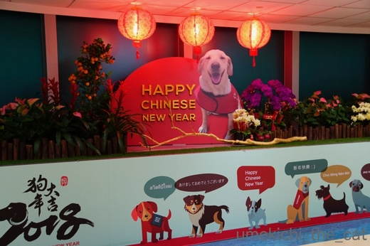
（写真は全ておっと撮影）
春節の飾り付けがお出迎え。戌年なのでいたるところにわんこの絵や置物が。
桃園空港から台北市内へは2016年にMRT（地下鉄）が開通したので
乗り換えなし＆早いでとっても便利になりました。
それまでは鉄道を乗り継いだり時間のかかるリムジンバスだったりで結構不便だったようです。
が、今回は新幹線で台北市内に行こう！ということで
空港からMRTに乗って高鉄桃園駅まで移動しました。
（高鉄＝新幹線です。THSR Taiwan High Speed Rail とも）
移動の前に空港内のフードコートで早速食べますよー。このために機内食も半分以上残してきました。
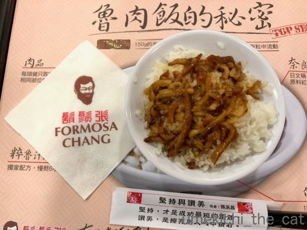
魯肉飯（ルーロンハン）です。
八角を効かせた豚肉の煮込みをご飯にかけたもの。
見た目とは裏腹にあっさりとしています。
日本であまりお目にかかることはない料理です。とっても美味しいのに。
小盛りを二人でシェアしました。
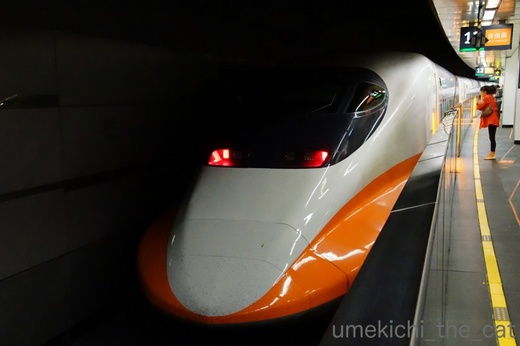
これが台湾の新幹線。
外国人専用の新幹線３日間周遊券をwebで予約して現地の駅窓口で引き取りました。
中国語、一言も話せませんが英語と日本語（カタコト）が通じるので大丈夫！
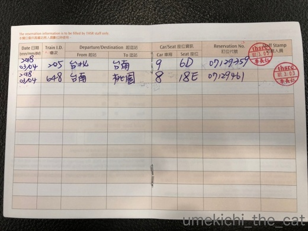
web予約ができたりする割にはパスは手書き 。
この辺のアナログチックなところが台湾のいいところでもあります＾＾
このパスがあれば台湾の南から北まで行動できますよー。
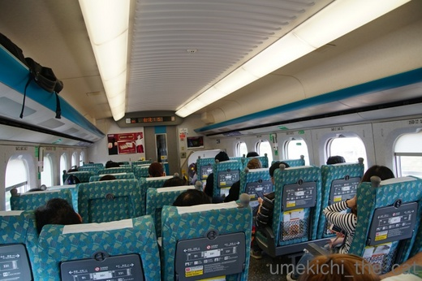
車両は日本製なのでなんだか落ち着きます。乗り心地も快適でした。
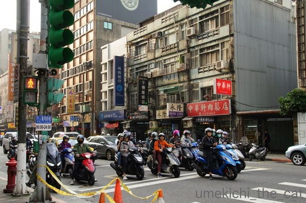
台北市内に到着。
これこれ！これが台湾の光景です。スクーター、ミニバイクが異様に多い。
２人乗り３人乗りも当たり前。
自転車なんてましてやママチャリなんて見かけません。
（ママチャリって日本独自のものなんですね・・・）
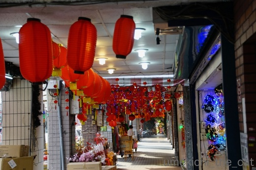
春節グッズ（？）を売るお店には赤々と提灯が下がっていました。
イルミネーショングッズもてんこ盛り。皆さん派手なものがお好きなようで・・・
ホテルにチェックインして荷物を置いたら早速街を散策。
主に地元の人が買い物する市場やスーパーを巡りました。
海外のスーパー大好き！
地元の人がどんなものを買い物カゴに入れるのかじっとみていたり
珍しい調味料を発見したり。
２件ほどスーパー巡りをして色々買い込みました。
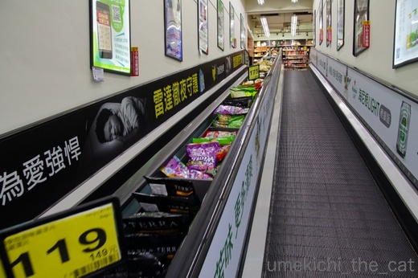
店内、階の移動はスロープ式のエスカレーター。
手すりの向こうには商品が並んでいます。ついつい買わせようという魂胆ですね (^▽^;)
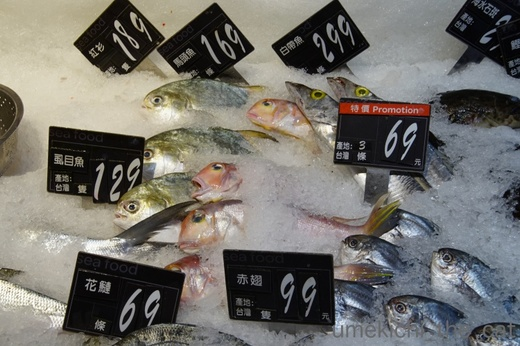
鮮魚コーナーには見たこともない魚が。
虱目魚は台湾で今はやりのサバヒー。淡白な白身のお魚でした。
味・食感はサワラに似てるかな。
スーパーを出てお夕食に向かいますよー！
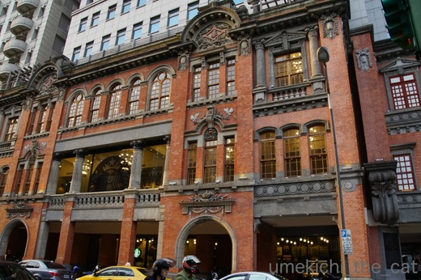
日本統治時代のものでしょうか。街には雰囲気のある建物がとっても多いです。
ちゃんとリノベされていてスタバが入っていました。
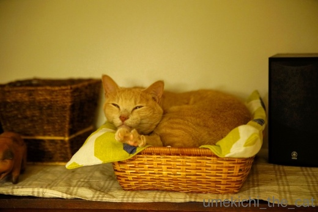
![[猫]](https://blog.ss-blog.jp/_images_e/101.gif) やっぱり ちゃっちゃとおわれへんのやな つづくんやて つきあったってや〜
やっぱり ちゃっちゃとおわれへんのやな つづくんやて つきあったってや〜
 ↑ガブッと一押し↑
↑ガブッと一押し↑
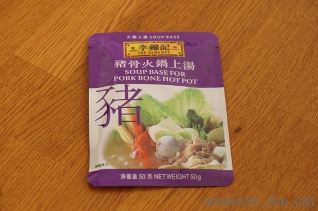
李錦記のスープストック。いろんな味のものがあるのですが
ポークベースと麻辣味のを買いました。
ポークベースは今夜お鍋にしていただきます。
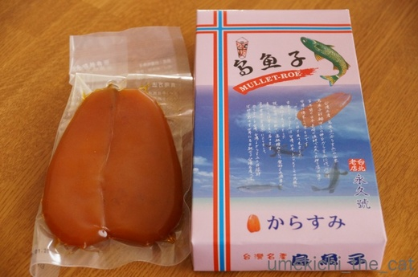
台湾土産の定番からすみ。
前回空港内dutyfreeで買ったものが「ふーん。わかった」という感じだったので
今回は買わなくてもいいかなと思っていたのですが。
おっとがここのお店のは一味違うらしい、というので買ってみました。
さて、お味はどうなのでしょうか。
二度目の旅。台湾にはまっちゃいました＾＾
３月３日関空から台湾へ。桃園国際空港に到着です。
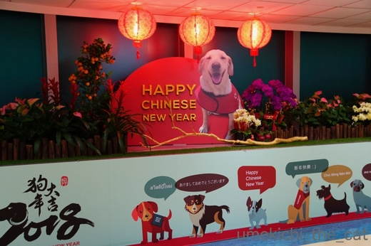
（写真は全ておっと撮影）
春節の飾り付けがお出迎え。戌年なのでいたるところにわんこの絵や置物が。
桃園空港から台北市内へは2016年にMRT（地下鉄）が開通したので
乗り換えなし＆早いでとっても便利になりました。
それまでは鉄道を乗り継いだり時間のかかるリムジンバスだったりで結構不便だったようです。
が、今回は新幹線で台北市内に行こう！ということで
空港からMRTに乗って高鉄桃園駅まで移動しました。
（高鉄＝新幹線です。THSR Taiwan High Speed Rail とも）
移動の前に空港内のフードコートで早速食べますよー。このために機内食も半分以上残してきました。
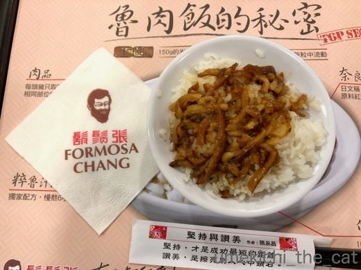
魯肉飯（ルーロンハン）です。
八角を効かせた豚肉の煮込みをご飯にかけたもの。
見た目とは裏腹にあっさりとしています。
日本であまりお目にかかることはない料理です。とっても美味しいのに。
小盛りを二人でシェアしました。
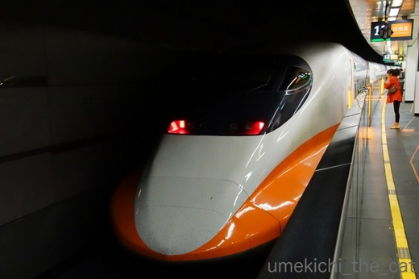
これが台湾の新幹線。
外国人専用の新幹線３日間周遊券をwebで予約して現地の駅窓口で引き取りました。
中国語、一言も話せませんが英語と日本語（カタコト）が通じるので大丈夫！
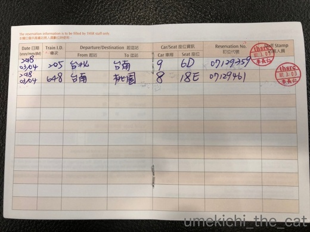
web予約ができたりする割にはパスは手書き 。
この辺のアナログチックなところが台湾のいいところでもあります＾＾
このパスがあれば台湾の南から北まで行動できますよー。
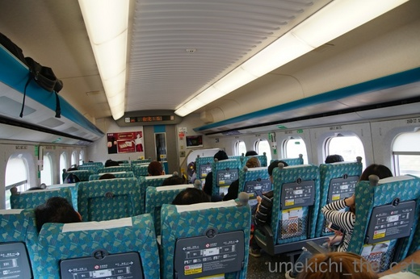
車両は日本製なのでなんだか落ち着きます。乗り心地も快適でした。
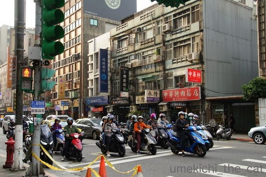
台北市内に到着。
これこれ！これが台湾の光景です。スクーター、ミニバイクが異様に多い。
２人乗り３人乗りも当たり前。
自転車なんてましてやママチャリなんて見かけません。
（ママチャリって日本独自のものなんですね・・・）
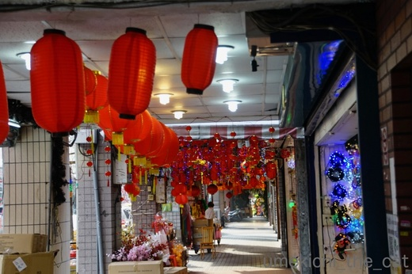
春節グッズ（？）を売るお店には赤々と提灯が下がっていました。
イルミネーショングッズもてんこ盛り。皆さん派手なものがお好きなようで・・・
ホテルにチェックインして荷物を置いたら早速街を散策。
主に地元の人が買い物する市場やスーパーを巡りました。
海外のスーパー大好き！
地元の人がどんなものを買い物カゴに入れるのかじっとみていたり
珍しい調味料を発見したり。
２件ほどスーパー巡りをして色々買い込みました。
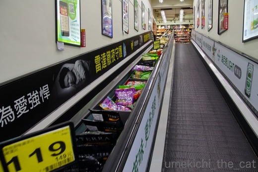
店内、階の移動はスロープ式のエスカレーター。
手すりの向こうには商品が並んでいます。ついつい買わせようという魂胆ですね (^▽^;)
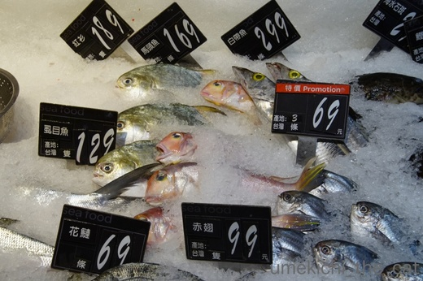
鮮魚コーナーには見たこともない魚が。
虱目魚は台湾で今はやりのサバヒー。淡白な白身のお魚でした。
味・食感はサワラに似てるかな。
スーパーを出てお夕食に向かいますよー！
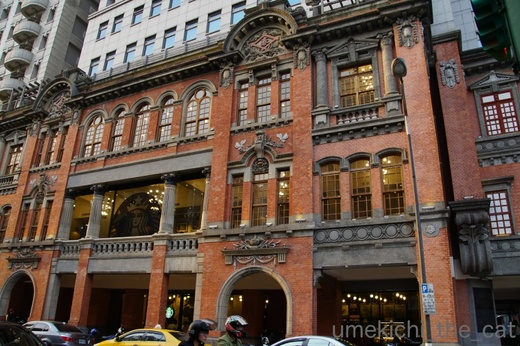
日本統治時代のものでしょうか。街には雰囲気のある建物がとっても多いです。
ちゃんとリノベされていてスタバが入っていました。
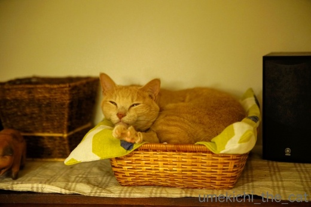
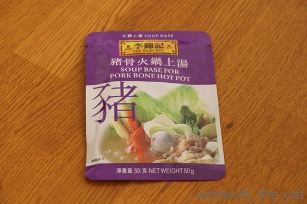
李錦記のスープストック。いろんな味のものがあるのですが
ポークベースと麻辣味のを買いました。
ポークベースは今夜お鍋にしていただきます。
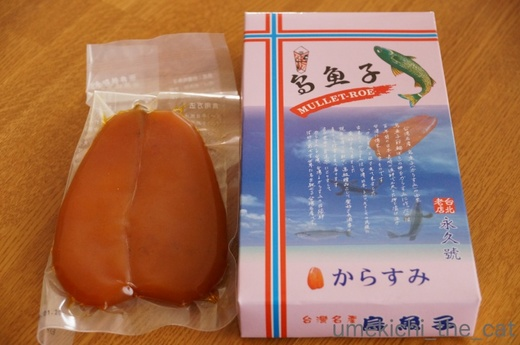
台湾土産の定番からすみ。
前回空港内dutyfreeで買ったものが「ふーん。わかった」という感じだったので
今回は買わなくてもいいかなと思っていたのですが。
おっとがここのお店のは一味違うらしい、というので買ってみました。
さて、お味はどうなのでしょうか。

カフェオレ色の梅吉

梅吉 2023年8月10日 永眠


梅吉と出会った譲渡会

犬猫の理由なき殺処分ゼロ
妄想広告
UMEKICHI 光

爆発的に早い！
時々攻撃的！
Thanks to Mr.Boss365
爆発的に早い！
時々攻撃的！
Thanks to Mr.Boss365

台湾！ご飯が美味しいみたいですよね♪
一度入ってみたいです(#^.^#)
by きぃ (2018-03-08 16:29)
了解です。次も付き合います！^ ^
by KENT0mg (2018-03-08 17:01)
スローブ式エスカレーターは初めて見ました。しかも商品棚付き。いろんな国のスーパーを見ると違いが面白いのでしょうね。
by zombiekong (2018-03-08 18:09)
台湾新幹線は台湾に初めて行ったときフリーの日に無駄に台北-高雄を往復しました(^^)
by ma2ma2 (2018-03-08 19:37)
魯肉飯、おいしそうだあ。。
お値段も（リーズナブルだったら・・・）ぜひ食べてみたいです～。^^;
日本製の台湾新幹線車両も乗ってみたいです。
by yes_hama (2018-03-08 21:23)
台湾にも、からすみがあるんですね。驚きです。
ちゃんと日本語で書かれています。
これは買っちゃいますね(^^)
by riverwalk (2018-03-08 22:28)
台湾は、武術太極拳の聖地。憧れております。
魯肉飯、美味そうですな！
続きも読ませて頂きますよ、笑顔（？）が素敵な梅吉さん！
by うめむす (2018-03-09 00:18)
台湾いいですよね。一度行ってみたいところです。
ルーロンハンおいしそう〜♪
台湾で買うお土産のニッポンゴ、何気にツボのものが多いです(｡-_-｡)
by Ja-Kou66 (2018-03-09 00:28)
大陸の新幹線は怖いですけどねぇ。
ここのは日本のシステムだから安心だと思います＾＾
by ぽちの輔 (2018-03-09 05:47)
台湾、楽しそうですねぇ( ^ω^ )
かみさんが「行きたい〜」と叫んでて
「今年こそ（かみさん）妹と行く！」と宣言してます(⌒-⌒; )
えっ、私はニャンズと暮らすことを決めた時に
「旅行は行けなくなるけど良いのね？」と念を押されたので
留守番確定です(*_*)
by ニッキー (2018-03-09 07:40)
いいなー！
いきなりのルーローハン（≧∇≦）
素敵すぎです。
周遊券、確かにめっちゃアナログですよね(^_^;)
by よーちゃん (2018-03-09 08:19)
空港から台北市内へ乗り換え無し？
そんな便利なことになってるのですね！
覚えてますよー。リムジンバス(笑)
ちぃさんの記事読み進めたら、きっと台湾に行きたくなるなｗｗ
by リュカ (2018-03-09 10:46)
スロープのエスカレーターに並べてある商品！わー買わされますねコレ。うまい事考えてます(>_<)
次回もつき合いますよ。台湾か～行ってみたいなよその国～♪
by palpal (2018-03-09 15:36)
きぃさん＞
台湾料理は独特の香辛料を使っているので
口に合わない方もいらっしゃるかと。
でも私は大好きなんですよねー＾＾
日本では台湾料理の店があまりないのが残念です。
KENT0mgさん＞
思ったより長くなりそうなんですが・・・
お付き合いよろしくお願いいたしまーすm(_ _)m
zombiekongさん＞
スーパーにもお国柄が現れるかな、と思って探索しております＾＾
でも台湾はスーパーよりも市場の方が賑わってました。
市場編は後日登場予定でーす。
ma2ma2さん＞
３〜４時間あれば往復できちゃいますものね＾＾
車窓から見る線路沿いの風景も楽しかったのではないでしょうか。
yes_hamaさん＞
この魯肉飯は4〜5０台湾ドルだったかな・・・
日本円だど200円程度でしょうか。
台湾食はリーズナブルなものが多いです。
新幹線の旅も日本と変わらず快適でした。
ちゃんと車内販売も来るんですよー。
ちなみに指定席でも車内での改札はありませんでした。
riverwalkさん＞
からすみは台湾の他にもイタリア・スペインなどでも作っているんですって。
ところは変わっても人間が考えることは同じなんだなーと思いました。
使う魚卵も国によって違うのも面白いですよね＾＾
ちなみに私は日本産のカラスミを食べたことがないので味の比較は出来ませんwww
うめむすさん＞
武術太極拳は大陸ではなくて台湾が聖地なのですね。
公園で演舞している方たちがいましたよー
あの方たちは聖地の有難い方達だったのですね。
もっとじっくりみてくれば良かった・・・
Ja-Kou66さん＞
街中にも怪しげな日本語がありましたよー。
「お茶とマジック手」というお店を見つけ時には脱力しましたwww
せっかくカタカナ使ったんだから手もハンドにして欲しかった・・・
ぽちの輔さん＞
大陸系だと飛行機にも乗りたくありません(^▽^;)
台湾は大陸に汚されることの無いように願うばかりです。
ニッキーさん＞
妹さんに留守番をお願いするのではなくて
ニッキーさんが留守番役なのですね(^▽^;)
お土産たくさん買って来てもらわなくちゃ！
行くならマンゴーの時期でしょうか。でも暑いんですよね・・・
よーちゃん＞
旅行の楽しみは食にあり！ですよね＾＾
なんでもとりあえず食べてみたい方なので
好き嫌いのない自分がありがたいです(≧▽≦)
台北市民マラソン大会とかないのでしょうか？
あの国は（国じゃないけど・・・）暑いから
走るのには向いてないのかな。
リュカさん＞
前回台湾に行ったのは地下鉄空港線が開通した一月後くらい。
とっても便利でしたよー。
この路線の開通と一緒に
飛行機のインタウンチェックイン（キャリアによるけど）
も出来るようになったのでますます便利に！！
どうよ、どうよ、台湾(≧▽≦)
palpalさん＞
そうそう＾＾商売上手よね！大阪の商人もびっくりかしらー！
お付き合いありがとうございます＾＾
行った気になれるようなレポ、がんばっちゃいますよＯ(≧▽≦)Ｏ
by ちぃ (2018-03-09 18:13)
戌年、今風の？わんこが並んでるんですね～＾＾
お～美味しそうなご飯！
スロープ式のエスカレーターって面白いですね。
商品が並んでいるとは。
梅吉さん、もうお留守番終わったから余裕の笑顔＾＾
by sana (2018-03-09 19:02)
お～カラスミだ！冷酒やワインがどんどん進みそう♪
私も海外でスーパーに行くのが大好きです。
お土産も全部スーパーで買っちゃう(*^▽^*)
地下鉄も新幹線もなかった・・・行ったのは何年前なんだろう^^;
by ゆきち (2018-03-09 21:15)
わぁ、台湾、いいなぁ〜♡
行ったことないですが、行った人は、みんな楽しいって言うわ♡
いまは、新幹線もあるのね〜(@@)
by のらん (2018-03-10 08:13)
魯肉飯、美味しそうですね。
日本だと、おまけ的とかのイメージになっちゃうのかなぁ？
なんとなくみため素朴なものを
1品で売り物として出すところが
少なくなってきたというか…
八角が苦手な人もまだ多いのかもしれませんね。
by ふにゃいの (2018-03-10 11:34)
私も台湾は大好きで、5~6回は行ったかなぁ。
近いからいいよね＾＾
屋台でもお店でも、美味しいし、言葉はわからなくても
漢字をみたら、なーんとなく意味がわかるような気が…＾＾；
士林夜市は、綺麗になる前のほうが好きだったな～。
キュウフンも良いし、旅行記を拝見してて
また行きたくなりました～((´∀｀))
by マーヤ (2018-03-10 12:57)
sanaさん＞
魯肉飯は台湾のおふくろの味的位置にあるみたいです。
美味しいけれど地味なので異国での商業ベースには
乗りにくいのでしょうか。
梅吉は旅行後2〜３日はいつにも増して甘えっ子になっていました。
はい＾＾思う存分甘えさせちゃいましたよー。
ゆきちさん＞
そうなんです・・・カラスミいつ食べようか迷っちゃいます。
二日酔いになっても大丈夫な日の前の夜、を作らなければ！！
台湾もここ10年くらいで飛躍的に都会化したのでしょうか。
違いを見に出かけるのも楽しいかもしれませんねー＾＾
こてつくん初留守番体験！？
のらんさん＞
台湾の人々は（大陸人に比べて）礼儀正しくて
日本人に近い感性を持っているのが楽しい理由かもしれません＾＾
新幹線で南北びゅーっと行けるのも楽しいですよ♡
ふにゃいのさん＞
素朴な料理こそ美味しいのに
インスタ映え先行な風潮がますます強まる昨今ですものね。
日本で口にする機会があまりないのは残念ですが
台湾に行く理由があるということで良しとします＾＾
マーヤさん＞
おお！台湾の大先輩ですね＾＾
そうそう、漢字はなにげに意味がわかるところが面白い。
大陸の略字だとわからないんですけどね。
士林夜市は未見なんです！そのうち行って見たいなぁ。
故宮博物院で夕方まで過ごしてその帰りに寄るのがいいかな。
キュウフンは前回の旅行で行きました。
強烈な中国な赤が忘れられません。
そしてキュウフンから台北市内まで乗ったタクシーも！
暴走タクシー（台湾のタクシー＆バスは運転が乱暴ですよね）
怖かったー。
by ちぃ (2018-03-12 15:37)